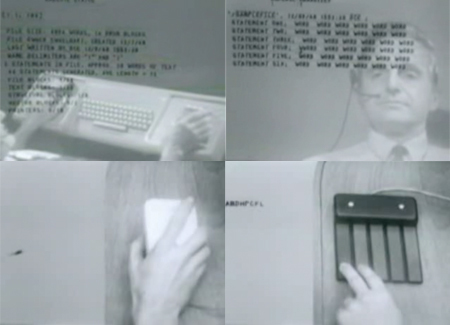

The Graphical User Interface
The emulation of a terminal command line might still be the supporting backbone of modern computer operating systems and interfaces, but the average computer user in modern times is unlikely to ever utilize one, or even see one. This is due to the rise of the Graphical User Interface, or GUI. GUIs provide rich, colorful, customizable, intuitive, highly-interactive ways for users to make use of a computer.
 The first system reminiscent of a Graphical User Interface was the On-Line System, commonly referred to as the NLS, developed by researchers at the Stanford Research Institute in the late 1960s. This system introduced many modern ideas such as hypertext, mouse navigation, screen windowing, and presentation programs. GUIs gained traction and were popularized in the 1980s as windowing systems were developed for command line interfaces and the first Apple Macintosh was released. These early GUIs displayed information in grayscale, manifesting a similar utilitarianism to that of command line interfaces. An interesting presentation of the NLS can be seen on YouTube, where you can see the system in action.